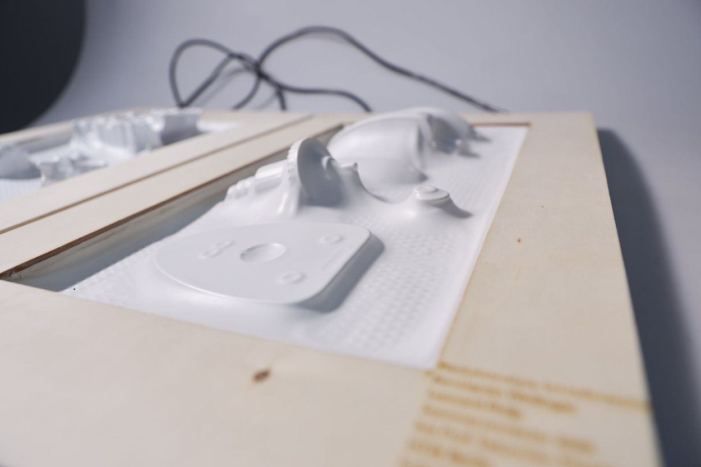

Brief
Together with Konstantin Weilinger, I took a detail sander apart and analysed every part for repairability, materials and manufacturing. The findings were laser-engraved into the frame of two presentation boards with a vacuum-formed inlay.
10 / Sustainable Design 2
Every part of a detail sander, analysed for repairability, materials and manufacturing.

Together with Konstantin Weilinger, I took a detail sander apart and analysed every part for repairability, materials and manufacturing. The findings were laser-engraved into the frame of two presentation boards with a vacuum-formed inlay.

